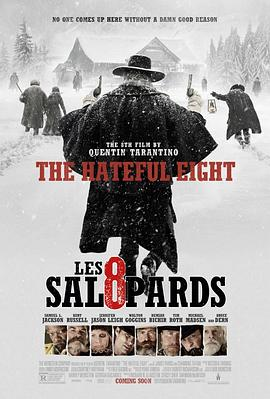

八恶人 / The Hateful Eight
又名：冰天血地8恶人(港) / 可憎八人 / The H8ful Eight / The Hateful 8
get不太到…最后有点6
作品信息
| 导演 | 昆汀·塔伦蒂诺 |
| 编剧 | 昆汀·塔伦蒂诺 |
| 主演 | 塞缪尔·杰克逊 / 库尔特·拉塞尔 / 詹妮弗·杰森·李 / 沃尔顿·戈金斯 / 德米安·比齐尔 / 蒂姆·罗斯 / 迈克尔·马德森 / 布鲁斯·邓恩 / 詹姆士·帕克斯 / 查宁·塔图姆 / 丹娜·格瑞尔 / 佐伊·贝尔 / 李·霍斯利 |
| 类型 | 剧情 / 犯罪 / 西部 |
| 制片国家/地区 | 美国 |
| 语言 | 英语 / 法语 / 西班牙语 |
| 上映日期 | 2015-12-07(洛杉矶首映) / 2015-12-30(美国) |
| 片长 | 168分钟(数字版) / 182分钟(胶片版) / 210分钟(加长版) |
| IMDb | tt3460252 |
最后一次看到是 2026-08-12T21:12:25+08:00 · 豆瓣原页